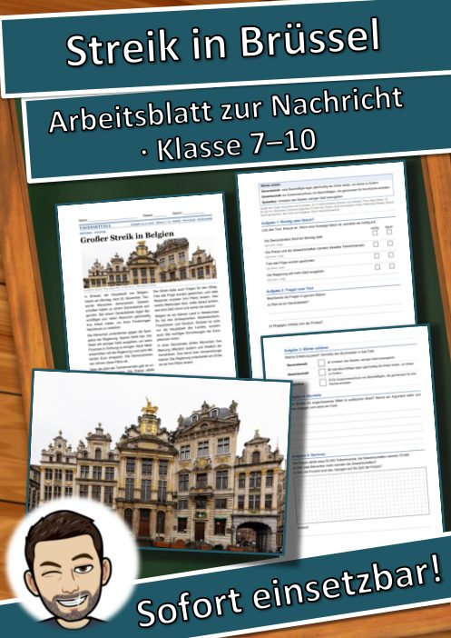

Tagesaktuelle Arbeitsblätter zu Nachrichten – kostenlos
Jeden Tag neu: kostenlose Arbeitsblätter zu aktuellen Nachrichten für Klasse 5–6 und 7–10, zu den Themen des täglichen Nachrichten-Reels „Dein Morgen-Update“. Mit Lesetext, Aufgaben, Kartenaufgabe und Lösungsblatt für Lehrkräfte.
Heute: Dienstag, 24. November 2026

Politik · Wirtschaft · Mathematik
Großer Streik in Belgien
Brüssel, Belgien: Tausende Menschen demonstrieren gegen die Sparpläne der Regierung, nach Angaben der Polizei etwa fünfzigtausend.
Kostenlos und kopierfreundlich: alle Blätter als PDF, auf Wunsch in der Schwarz-Weiß-Fassung mit wenig Tinte.
Sofort einsetzbar: Morgenkreis, Vertretungsstunde oder Hausaufgabe.
Behutsam bei ernsten Themen: keine Gewaltdetails, Hinweise zum Umgang mit belastenden Nachrichten.
Quelle und Lizenz: Die Fotos sind frei lizenzierte Bilder von Wikimedia Commons (Nachweis am Blatt) und zeigen den Ort oder das Thema, nicht das Ereignis. Die Texte beruhen auf mindestens zwei unabhängigen Meldungen; die Quellen stehen im Lösungsblatt.
Tagesaktuelle Arbeitsblätter zu Nachrichten im Unterricht
Aktuelle Nachrichten holen die Welt ins Klassenzimmer. Schülerinnen und Schüler erleben, dass Politik, Wissenschaft, Umwelt und Wirtschaft nicht nur im Schulbuch stattfinden, sondern jeden Tag. Das Problem für Lehrkräfte ist der Aufwand: Ein gutes Nachrichtenthema zu finden, den Text altersgerecht zu kürzen, Aufgaben zu schreiben und eine Lösung zu erstellen, kostet schnell eine Stunde. Genau diese Arbeit nehmen dir die tagesaktuellen Arbeitsblätter auf dieser Seite ab.
Was auf jedem Blatt steht
Jedes Blatt beginnt mit einem verständlichen Lesetext zum Ereignis des Tages. Darauf folgen Aufgaben, die vom reinen Verstehen („Was ist passiert?“) über das Einordnen („Warum ist das wichtig?“) bis zum Diskutieren und Begründen führen. Fast immer gehört eine Kartenaufgabe dazu, damit die Klasse lernt, wo ein Ereignis stattfindet. Für dich gibt es ein eigenes Lösungsblatt mit den erwarteten Antworten und den Quellen, auf die sich der Text stützt.
Zwei Klassenstufen, zwei Fassungen
Alle Themen erscheinen in einer Fassung für Klasse 5–6 und in einer Fassung für Klasse 7–10. Die jüngere Stufe arbeitet mit kürzeren Sätzen und konkreten Beispielen, die ältere verlangt Begründungen, Vergleiche und eigene Stellungnahmen. Wer Tinte sparen möchte, nimmt die Schwarz-Weiß-Fassung; sie ist inhaltlich identisch und kopiert sich sauber.
Einsatz im Fachunterricht
Die Themen kommen aus Politik, Geographie, Umwelt, Wirtschaft und Gesellschaft und passen deshalb zu Politik und Sozialkunde, Erdkunde, Deutsch, Ethik und dem Sachunterricht der höheren Klassen. Das tägliche Nachrichtenblatt eignet sich als fester Einstieg am Wochenanfang, als Vertretungsmaterial, das ohne Vorbereitung funktioniert, oder als Übung zur Medienkompetenz: Woher weiß ich, ob eine Meldung stimmt? Mehr zu festen Unterrichtsthemen findest du bei den Lehrplan-Themen, weitere kostenlose Blätter unter kostenloses Unterrichtsmaterial.
Häufige Fragen zu den News-Arbeitsblättern
Was sind tagesaktuelle Arbeitsblätter zu Nachrichten?
Es sind Arbeitsblätter, die ein aktuelles Ereignis aus den Nachrichten für den Unterricht aufbereiten: ein kurzer Lesetext, Aufgaben zum Verstehen und Diskutieren, eine Kartenaufgabe und ein Lösungsblatt für Lehrkräfte. Sie erscheinen jeden Tag neu und lassen sich ohne Vorbereitung einsetzen.
Sind die Nachrichten-Arbeitsblätter wirklich kostenlos?
Ja. Alle Blätter auf dieser Seite sind kostenlos als PDF abrufbar, ohne Anmeldung. Du kannst sie für deinen eigenen Unterricht ausdrucken und kopieren.
Für welche Klassenstufen sind die Blätter gedacht?
Jedes Thema gibt es in zwei Fassungen: für Klasse 5–6 mit einfacherer Sprache und kürzerem Text sowie für Klasse 7–10 mit anspruchsvolleren Aufgaben. Beide Fassungen gibt es farbig und in Schwarz-Weiß.
Woher stammen die Informationen und Bilder?
Die Texte beruhen auf mindestens zwei unabhängigen Meldungen; die Quellen stehen im Lösungsblatt. Die Fotos sind frei lizenzierte Bilder von Wikimedia Commons, der Nachweis steht am Blatt.
Wie setze ich die Blätter im Unterricht ein?
Gut geeignet sind der Morgenkreis, eine Vertretungsstunde, die Einstiegsphase im Politik-, Erdkunde- oder Deutschunterricht oder eine Hausaufgabe. Bei ernsten Themen stehen Hinweise zum behutsamen Umgang im Lösungsblatt.